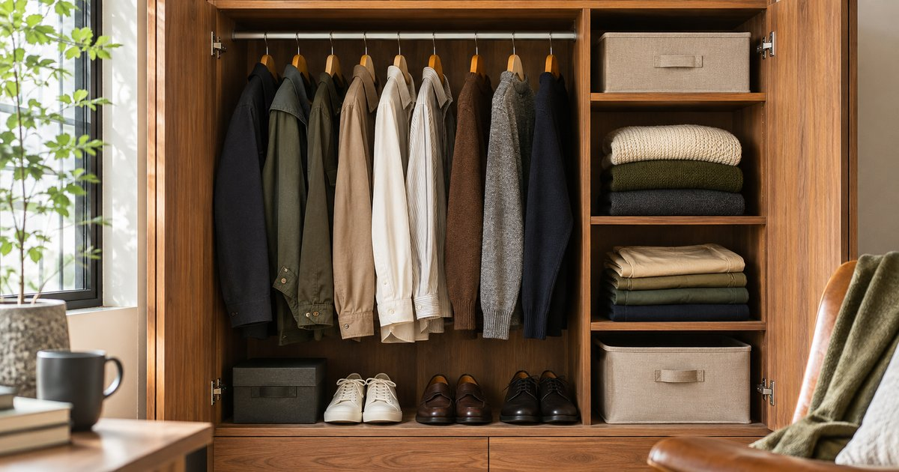
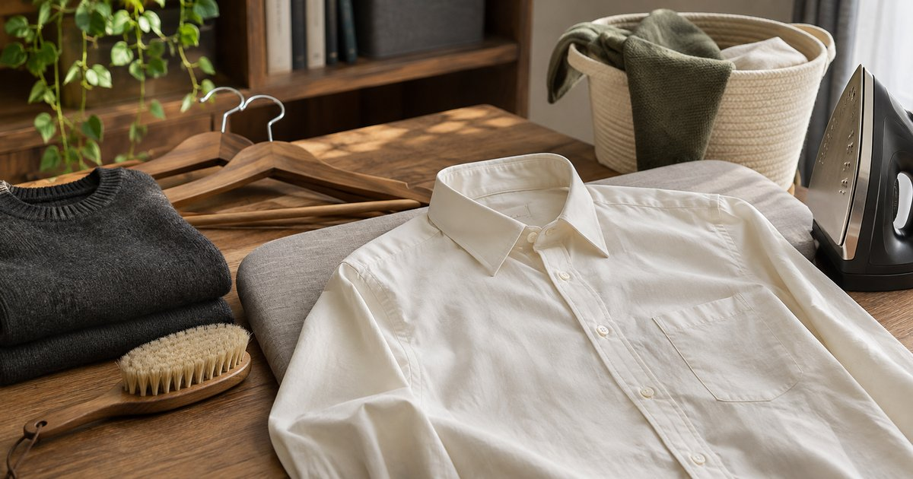

収納をすっきりさせたい
物が多くても、しまい方のルールを決めれば部屋は片付いて見えます。場所別の収納の記事をまとめました。
 インテリア
インテリア狭い部屋の収納術。「見せる収納」と「隠す収納」の使い分け
物が多くても、収納の考え方を変えれば部屋はすっきり見えます。見せる収納と隠す収納の使い分けと、便利な収納アイテムを紹介します。

インテリアクローゼット収納のコツ。服を見やすく、取り出しやすくする方法
クローゼットがごちゃつく原因は、しまい方のルールがないこと。服が見やすく、片付けやすくなる収納のコツをまとめました。
 インテリア
インテリア一人暮らしの小さなキッチン収納術。狭くても使いやすくする工夫
一人暮らしのキッチンは調理スペースも収納も限られがち。狭いキッチンを使いやすくする収納のアイデアを紹介します。
 インテリア
インテリア玄関をすっきり整える。狭い玄関の収納と片付けのコツ
毎日通る玄関は、部屋の第一印象を決める場所。靴や小物があふれがちな狭い玄関を整えるコツをまとめました。

アパレルお気に入りの服を長持ちさせる。洗濯と収納の基本ルール
服がすぐヨレる・縮む原因の多くは洗い方と収納にあります。今日からできる洗濯と収納のコツを紹介します。